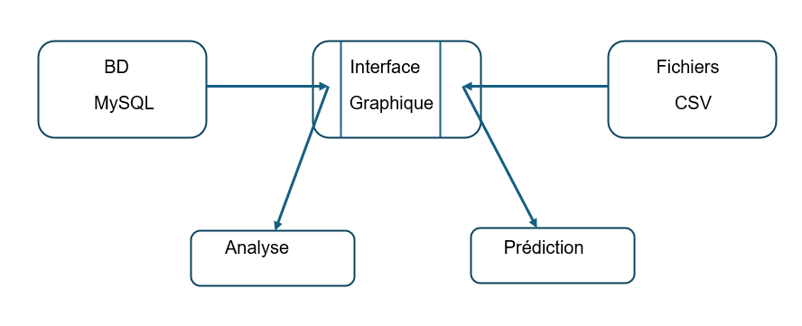
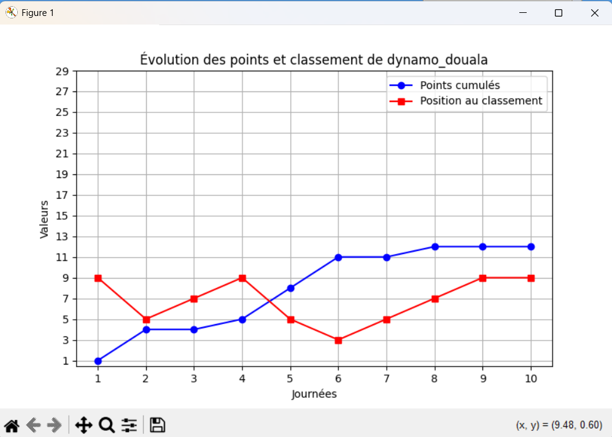
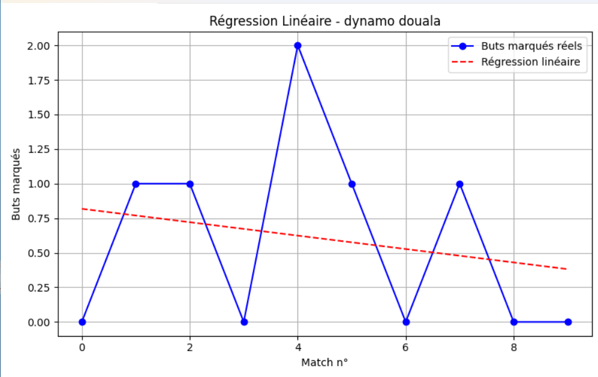
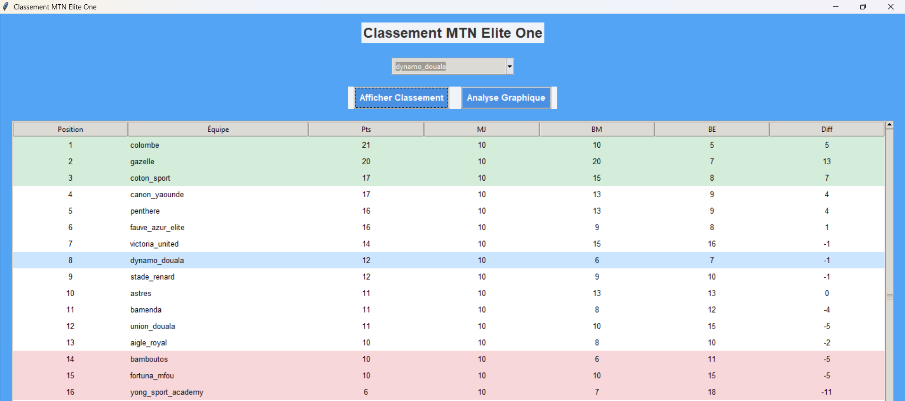
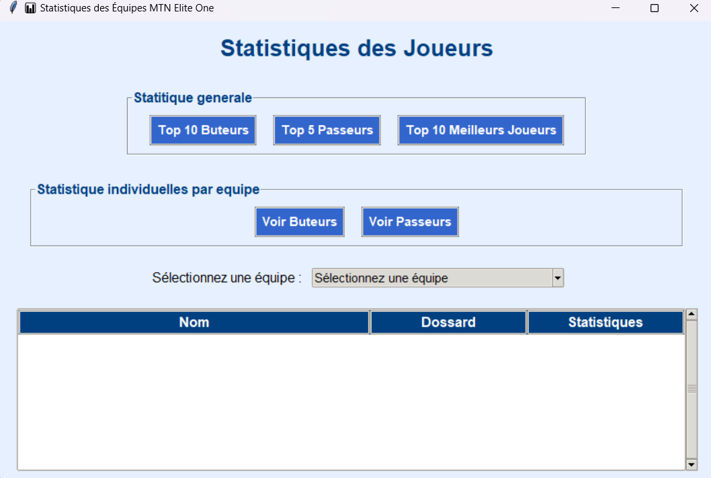

Analyste Données | IA | Développeur Web
Passionné par la donnée et l'intelligence artificielle, avec des compétences solides en Python, SQL, Web et Wordpress.
Passionné par la donnée et l'intelligence artificielle, avec des compétences solides en Python, SQL, Web et Wordpress.
Je suis Doungmo Tchoupou Nathanael, passionné par l'analyse des données, l'intelligence artificielle et le développement web. Fort d'une expérience dans la création d'interfaces graphiques en Python et la gestion de base de données avec MySQL et PostgreSQL, je conçois des outils intelligents et utiles.
Application développée avec Python (Tkinter), analyse statistique, Machine Learning et MySQL.
    Site WordPress moderne pour la vente d'appareils électroniques et d'engins lourds. Intégration WooCommerce, fiches produits, gestion des paiements.
Développée pour gérer les consultations, les patients, les statistiques hospitalières et les fichiers médicaux.